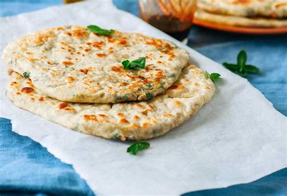

Parathas

Description
Parathas are the shallow-fried version of chapatis. This recipes make crunchier and less-flaky parathas than those I buy from the store. Serve with cinnamon-sugar for a sweet treat or with curries as a scooping bread.
Ingredients
- 1 and half cups all-purpose flour
- half cup whole wheat flour
- 1 teaspoon salt
- 1 tablespoon melted butter
- 1 teaspoon white sugar
- half teaspoon garlic powder
- 1 teaspoon dried mixed herbs
- quarter cup water
- oil for frying